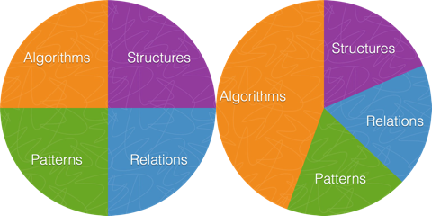

Why is computing competence important?
First of all, we need to define the term computing and what
it contains.
Definition of computing.
Computing means in this document mathematical problem solving using
computers. It covers numerical as well as symbolic computing.
Mathematics has traditionally been about identifying and verifying
structures, patterns, relations, and algorithms.
Mathematical recipes in the form of algorithms have always been
in focus, but with modern computers that can perform \( 10^{15} \)
arithmetic operations per second, the enormous computing power
have led to an even stronger focus on algorithms and
what we here call computing competence.

The computing competence is about
- derivation, verification, and implementation of algorithms
- understanding the limitations (what can go wrong) with algorithms
- overview of important, known algorithms
- understanding how algorithm are used
In the past, computing competence was about algorithms involving pen
and paper and what is often referred to as
continuous
models. Application of computers calls for approximate
discrete
models. Much of the development of methods for continuous models are
now being replaced by methods for discrete models in science and
industry, simply because much larger problem classes can be addressed
with discrete models, often also by simple and generic methodologies.
However, verification of algorithms and understanding their
limitations requires much of the classical knowledge on continuous
models.
So, why should basic university education undergo a shift from
classical mathematics to modern computing?
- The impact of the computer on mathematics is tremendous:
science and industry now rely on solving mathematical problems
through computing.
- Computing increases the relevance in education by solving
more realistic problems earlier.
- Computing through programming is excellent training of creativity.
- Computing enhances the understanding of abstractions and generalization.
- Computing decreases the need for special tricks and tedious algebra, and
shifts the focus to problem definition, visualization, and "what if"
discussions.
The result is a deeper understanding of mathematical modeling.
In general, we have the famous quote by Kristen Nygaard: "Programming
is understanding".
For the mathematical training, there is one major new component among
the arguments above: understanding abstractions and
generalization. While many of the classical methods developed for
continuous models are specialized for a particular problem or a narrow
class of problems, computing-based algorithms are often developed for
problems in a generic form and hence applicable to a large problem
class.
Key principle in mathematical modeling.
The power of mathematics lies in identifying a given problem as
a special case of an abstract class of problems, identifying
general solution methods for this class of problems, and applying
a general method to the specific problem
(applying means calculations by pen and paper, symbolic computing,
or numerical computing by ready-made and/or self-written software).
This generic view on problems and methods is particularly important
for understanding how to apply available, generic software to solve
a particular problem.
Computing competence represents new knowledge and will increase the
volume of student programs. It is always a major problem to remove
topics from the curriculum, but a possible candidate is specialized
mathematical methods for special problems - if more generic approximate
algorithms can solve the problems.
(hpl 1: Maybe unnecessary to suggest removals? But it follows from the box: if a generic view on mathematics is important, one should cut down on very specialized methods for simplified/specialized problems unless the end result is of particular importance. Often, the end result is a series and difficult to interpret...)